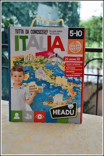
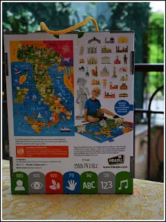
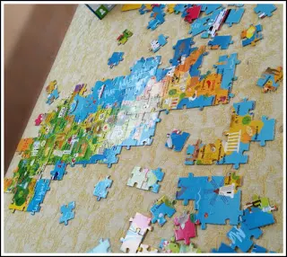
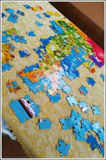
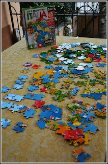
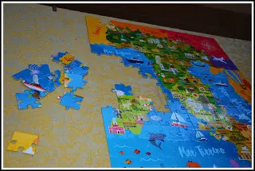
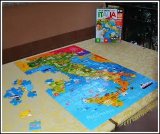
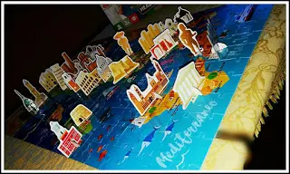
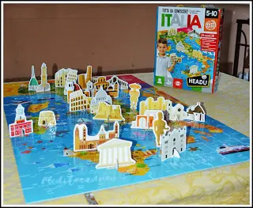
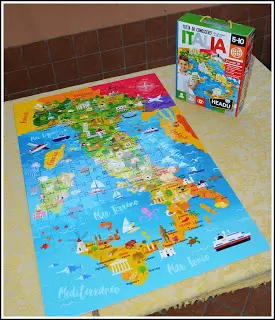

HEADU - gioco e formazione
Attraverso il gioco, un'azienda italiana si occupa di formare i bambini dai 0 ai 10 anni.
Sappiamo che i bambini amano giocare e prestano attenzione solo ai giochi e non alle notizie da incamerare davvero, ovvero la storia, geografia, scienze.
Oppure per i più piccini con le prime paroline, a volte hanno poco interesse anche a provare a parlare.
Ed ecco che Headu ha pensato proprio a tutto ciò.
Il giochino che sto per darvi vedere è indicato per l'età dai 6 ai 10 anni.


Gioco:
È un puzzle che ci mostra tutta l'Italia ma con i relativi monumenti più significativi in 3D. Molto divertente, oltre ad essere estremamente colorato e poi è innovativo con i monumenti di tutta Italia.

Questo serve soprattutto per far ricordare al bambino in che posizione della cartina geografica Italiana si trova ogni singolo monumento.
Il puzzle headu è un bellissimo gioco di memoria.
Trovo questo modo di apprendere e studiare geniale. Io mi sono divertita insieme alle mie nipotine a creare il puzzle ed infine collocare ogni singolo monumento al posto giusto.


È stato un momento del tutto spensierato e gioioso ma anche costruttivo ed intellettuale.





Vi consiglio ogni singolo gioco che è presente sul sito www.headu.com